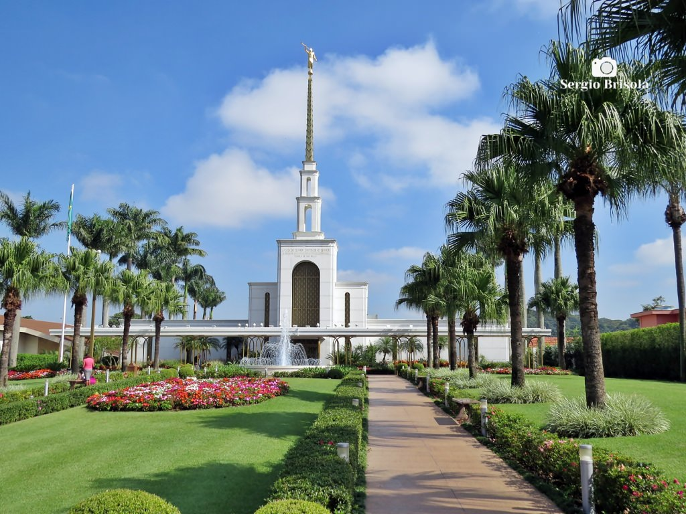
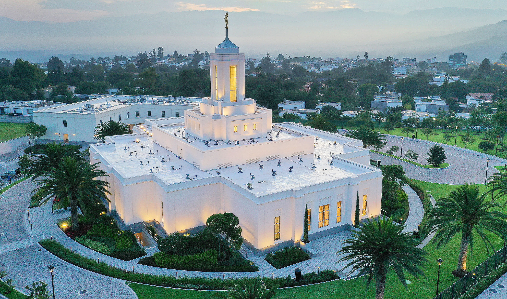

Home

Trujillo, Peru Temple

Arequipa, Peru Temple

Los Olivos, Peru Temple

Lima, Peru Temple

Buenos Aires, Argentina Temple

Sao Paulo, Brazil Temple

Santiago Oeste, Chile Temple

Quito, Ecuador Temple

La Paz, Bolivia Temple